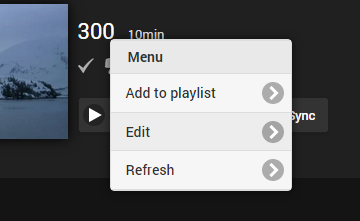
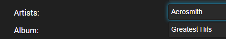

Musik-Namensgebung
Emby ist vollständig tag-basiert, was bedeutet, dass alle Informationen aus den in den Musiktracks eingebetteten Tags gelesen werden. Die Ordnerstruktur in Emby 4.6 und späteren Versionen ist nicht zwingend erforderlich, kann jedoch eine nützliche Möglichkeit sein, Ihre Medien zu organisieren.
Die empfohlene Ordnerstruktur für Musik ist Künstler\Album\Song
\Musik
\Künstlername
\Albumname
1- Song.mp3
2- Song.mp3
Dies ist keine Voraussetzung, und auch andere Strukturen funktionieren, aber dies ist die gängigste Methode. Einige andere Beispiele für unterstützte Strukturen sind Album\Song:
\Musik
\Albumname
1- Song.mp3
2- Song.mp3
Oder sogar eine flache Bibliothek von Songdateien:
\Musik
1- Song.mp3
2- Song.mp3
Jede Namenskonvention für Audiodateien ist akzeptabel. Die Tracknummern werden mithilfe der eingebetteten ID3-Tag-Informationen abgerufen.
Der erste Schritt beim Einrichten einer Musikbibliothek besteht darin, Ihre Ordnerstruktur auszuwählen.
Entweder der perfekt organisierten Strukturen ermöglicht die Verwendung vorhandener datenträgerbasierter Bilder.
Note
Der Emby Server unterstützt jede Ordnerstruktur für Musikbibliotheken. Wenn Sie jedoch Metadatendateien wie nfo, Bilder usw. direkt in Ihre Medienordner speichern möchten, ist eine strukturierte Ordneranordnung erforderlich, um dem Emby Server zu helfen, zu verstehen, welche Ordner Ihren Alben und Künstlern entsprechen. Der Emby Server liest diese Metadatendateien gerne aus den Verzeichnissen in Ihren Medien oder aus dem globalen Metadatenbereich, den er verwaltet.
Wenn es Ihnen wichtig ist, dass diese Dateien neben Ihren Medien geschrieben und gespeichert werden, sollten Sie eine der perfekt organisierten Optionen oben im Dropdown-Menü verwenden, vorzugsweise die Künstler\Album-Option in der Mitte. Was Sie im Dropdown-Menü wählen, muss mit dem Layout auf der Festplatte übereinstimmen. Eine Hierarchie aus sowohl Künstlern als auch Alben bietet die flexibelste und organisierte Lösung.
Musikbilder
Bilder werden sowohl in Künstler- als auch in Albumordnern unterstützt, sowie Bilder, die in Audiodateien eingebettet sind. Nachfolgend eine Tabelle der unterstützten Bilddateinamen:
Unterstützte Bilddatei-Erweiterungen sind jpg, jpeg, png und tbn.
Einige Bildtypen unterstützen mehrere Dateinamen. Diese werden in der Reihenfolge aufgeführt, in der sie überprüft werden.
| Bildtyp | Unterstützte Dateinamen |
|---|---|
| Primär | folder.ext |
| poster.ext | |
| cover.ext | |
| default.ext | |
| Kunst | clearart.ext |
| Hintergrund | backdrop.ext, backdropX.ext |
| fanart.ext, fanart-X.ext | |
| background.ext, background-X.ext | |
| art.ext, art-X.ext | |
| extrafanart (Unterordner)/fanartX.ext | |
| Banner | banner.ext |
| Disc | disc.ext |
| cdart.ext | |
| Logo | logo.ext |
| Daumen | thumb.ext |
| landscape.ext |
Für Hintergründe steht X für eine Nummer, und Sie können jede Anzahl nummerierter Hintergründe haben. Zum Beispiel:
\Musik
\Künstlername
backdrop.ext
backdrop1.ext
backdrop2.ext
backdrop3.ext
Tagging Ihrer Titel
Alle Musiktitel sollten mit den Informationen getaggt sein, die Sie in Emby anzeigen möchten. Emby sollte alle gängigen Tags unterstützen, die von Musicbrainz Picard geschrieben werden. Andere gängige Software zum Ändern/Schreiben von Tags ist Mp3tag und Tagscanner.
Bitte stellen Sie sicher, dass Sie alle Tag-Versionen schreiben oder alte Tags entfernen. Alle Tags sollten im Unicode-Format geschrieben werden.
Das Tagging Ihrer Alben und Titel sollte einfach sein, mit der möglichen Ausnahme von Alben mit verschiedenen Künstlern oder Kompilationsalben.
Für diese Art von Kompilationsalben, wenn Sie möchten, dass alle Titel als eine Einheit angezeigt werden, sollten Sie sicherstellen, dass sowohl die Felder "Album" als auch "Albumkünstler" für alle Titel gleich sind. Ansonsten wird das Album nach den verschiedenen gelisteten Künstlern aufgeteilt.
Mehrere Künstler können für Titel aufgeführt werden und sollten mit "; " (Semikolon Leerzeichen) getrennt werden, wie unten gezeigt.

Note
Wenn Sie einen Künstler mit zwei Alben desselben Namens haben, müssen Sie mbzalbumids verwenden oder einen Titel leicht ändern, um die Alben zu unterscheiden, ansonsten werden sie kombiniert. Ein Beispiel ist die Künstlerin Kim Wilde, die zwei Alben mit dem Titel "The Very Best Of Kim Wilde" hat, eines von 1984, eines von 2001.
Musikvideos
Um Musikvideos hinzuzufügen, richten Sie eine Bibliothek mit dem Typ "Musikvideos" ein. Die Namenskonventionen für Musikvideos sind identisch mit Filmen.
Um die Künstler und Alben von Musikvideos zu identifizieren, nutzen Sie den Metadaten-Manager. Bearbeiten Sie einfach ein Musikvideo:

Dann geben Sie den/die Künstler und/oder das Album ein:

Nach Fertigstellung werden die Künstler- und Albenseiten Links zu den Musikvideos anzeigen.
Note
Sie müssen sicherstellen, dass Ihre Musikdateien mit einem externen Programm ordnungsgemäß getaggt wurden. Emby verwendet diese Tags zur Identifizierung.
Für Musikvideos müssen Sie diese Dateien genauso benennen wie auf der Metadatenanbieter-Website, die https://imvdb.com/ ist.
Emby wird Albumkunstwerke verwenden, die lokal sind, zieht jedoch immer die Künstler und Personen von den Metadatenanbietern nach.